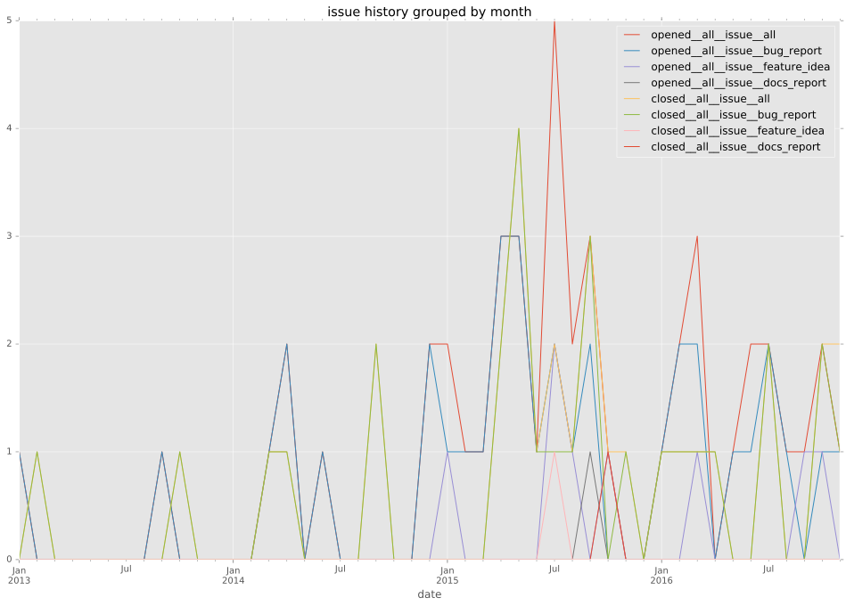
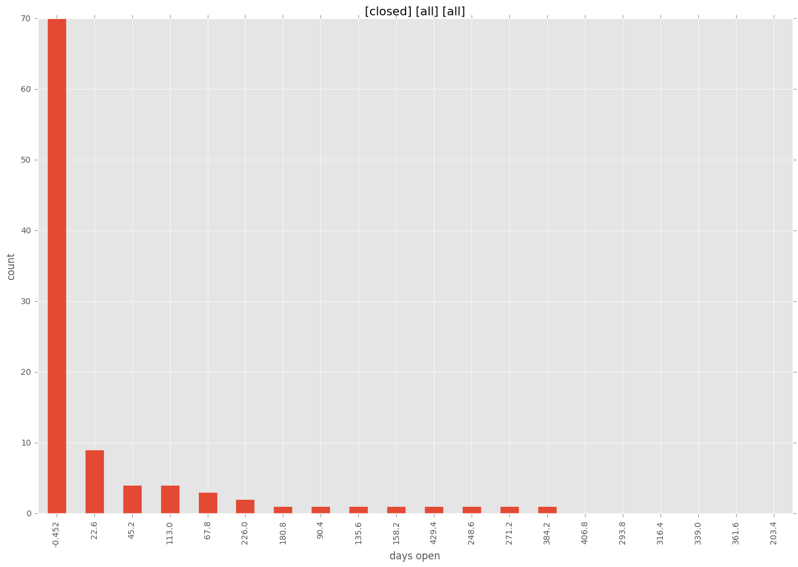

total issue counts
feature pull request: 25
docs report: 3
pullrequest: 72
docs pull request: 5
bugfix pull request: 40
feature idea: 10
issue: 47
new plugin: 1
bug report: 35
issue history

days open by issue type
bugfix pull request
count: 62
std: 21.0026124637
min: 0
max: 121
median: 2.5
mean: 9.85483870968
all
count: 138
std: 72.7993144769
min: 0
max: 452
median: 5.0
mean: 33.7101449275
pullrequest
count: 0
std: nan
min: nan
max: nan
median: nan
mean: nan
docs pull request
count: 7
std: 1.11269728053
min: 0
max: 3
median: 0.0
mean: 0.714285714286
docs report
count: 3
std: 4.04145188433
min: 28
max: 35
median: 28.0
mean: 30.3333333333
feature pull request
count: 36
std: 77.12272224
min: 0
max: 284
median: 17.0
mean: 49.5
feature idea
count: 3
std: 86.0871651293
min: 12
max: 181
median: 125.0
mean: 106.0
issue
count: 0
std: nan
min: nan
max: nan
median: nan
mean: nan
new plugin
count: 1
std: nan
min: 11
max: 11
median: 11.0
mean: 11.0
bug report
count: 26
std: 122.105931312
min: 0
max: 452
median: 13.0
mean: 70.5384615385
closures grouped by total days open
